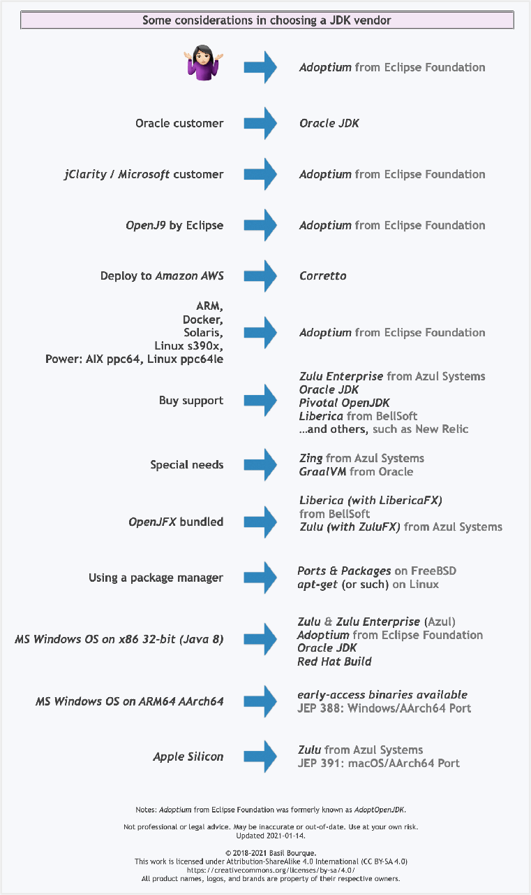

Due to recent Oracle Java SE Support Roadmap policy update (end of $free
release updates from Oracle after March 2019 in particular), I've been
searching for alternatives to Oracle Java. I've found that OpenJDK is an open-
source alternative. And I've found AdoptOpenJDK, now known as Adoptium, which
is a prebuilt binary. It puzzles.
What is the difference between OpenJDK and Adoptium/AdoptOpenJDK?
Answer
In short:
-
OpenJDK has multiple meanings and can refer to:
- free and open source implementation of the Java Platform, Standard Edition (Java SE)
- open source repository — the Java source code aka OpenJDK project
- prebuilt OpenJDK binaries maintained by Oracle
- prebuilt OpenJDK binaries maintained by the OpenJDK community
-
AdoptOpenJDK — prebuilt OpenJDK binaries maintained by community (open source licensed)
Explanation:
Prebuilt OpenJDK (or distribution) — binaries, built from
https://hg.openjdk.java.net/, provided as an archive or installer, offered for
various platforms, with a possible support contract.
OpenJDK, the source repository (also called OpenJDK project ) - is a
Mercurial-based open source repository, hosted at https://hg.openjdk.java.net.
The Java source code. The vast majority of Java features (from the VM and the
core libraries to the compiler) are based solely on this source repository.
Oracle have an alternate fork of this.
OpenJDK, the distribution (see the list of providers below) - is free as
in beer and kind of free as in speech, but, you do not get to call Oracle if
you have problems with it. There is no support contract. Furthermore, Oracle
will only release updates to any OpenJDK (the distribution) version if that
release is the most recent Java release, including LTS (long-term support)
releases. The day Oracle releases OpenJDK (the distribution) version 12.0,
even if there's a security issue with OpenJDK (the distribution) version 11.0,
Oracle will not release an update for 11.0. Maintained solely by Oracle.
Some OpenJDK projects - such as OpenJDK 8 and OpenJDK 11 - are maintained by
the OpenJDK community and provide releases for some OpenJDK versions for some
platforms. The community members have taken responsibility for releasing fixes
for security vulnerabilities in these OpenJDK versions.
AdoptOpenJDK, the distribution is very similar to Oracle's OpenJDK
distribution (in that it is free, and it is a build produced by compiling the
sources from the OpenJDK source repository). AdoptOpenJDK as an entity will
not be backporting patches, i.e. there won't be an AdoptOpenJDK 'fork/version'
that is materially different from upstream (except for some build script
patches for things like Win32 support). Meaning, if members of the community
(Oracle or others, but not AdoptOpenJDK as an entity) backport security fixes
to updates of OpenJDK LTS versions, then AdoptOpenJDK will provide builds for
those. Maintained by OpenJDK community.
OracleJDK - is yet another distribution. Starting with JDK12 there will
be no free version of OracleJDK. Oracle's JDK distribution offering is
intended for commercial support. You pay for this, but then you get to rely on
Oracle for support. Unlike Oracle's OpenJDK offering, OracleJDK comes with
longer support for LTS versions. As a developer you can get a free license for
personal/development use only of this particular JDK, but that's mostly a red
herring, as 'just the binary' is basically the same as the OpenJDK binary. I
guess it means you can download security-patched versions of LTS JDKs from
Oracle's websites as long as you promise not to use them commercially.
Note. It may be best to call the OpenJDK builds by Oracle the "Oracle
OpenJDK builds".
Donald Smith, Java product manager at Oracle writes:
Ideally, we would simply refer to all Oracle JDK builds as the "Oracle JDK",
either under the GPL or the commercial license, depending on your situation.
However, for historical reasons, while the small remaining differences
exist, we will refer to them separately as Oracle’s OpenJDK builds and the
Oracle JDK.
OpenJDK Providers and Comparison
Provider | Free Builds
from Source | Free Binary
Distributions | Extended
Updates | Commercial
Support | Permissive
License | Website
---|---|---|---|---|---|---
AdoptOpenJDK | Yes | Yes | Yes | No | Yes | https://adoptopenjdk.net
Amazon – Corretto | Yes | Yes | Yes | No | Yes |
https://aws.amazon.com/corretto
Azul Zulu | No | Yes | Yes | Yes | Yes | https://www.azul.com/downloads/zulu/
BellSoft Liberica | No | Yes | Yes | Yes | Yes | https://bell-sw.com/java.html
IBM | No | No | Yes | Yes | Yes | https://www.ibm.com/developerworks/java/jdk
jClarity | No | No | Yes | Yes | Yes | https://www.jclarity.com/adoptopenjdk-
support/
OpenJDK | Yes | Yes | Yes | No | Yes | https://adoptopenjdk.net/upstream.html
Oracle JDK | No | Yes | No** | Yes | No |
https://www.oracle.com/technetwork/java/javase/downloads
Oracle OpenJDK | Yes | Yes | No | No | Yes | https://jdk.java.net
ojdkbuild | Yes | Yes | No | No | Yes | https://github.com/ojdkbuild/ojdkbuild
RedHat | Yes | Yes | Yes | Yes | Yes |
https://developers.redhat.com/products/openjdk/overview
SapMachine | Yes | Yes | Yes | Yes | Yes | https://sap.github.io/SapMachine
Free Builds from Source - the distribution source code is publicly
available and one can assemble its own build
Free Binary Distributions - the distribution binaries are publicly
available for download and usage
Extended Updates - aka LTS (long-term support) - Public Updates beyond
the 6-month release lifecycle
Commercial Support - some providers offer extended updates and customer
support to paying customers, e.g. Oracle JDK (support details)
Permissive License - the distribution license is non-protective, e.g.
Apache 2.0
Which Java Distribution Should I Use?
In the Sun/Oracle days, it was usually Sun/Oracle producing the proprietary
downstream JDK distributions based on OpenJDK sources. Recently, Oracle had
decided to do their own proprietary builds only with the commercial support
attached. They graciously publish the OpenJDK builds as well on their
https://jdk.java.net/ site.
What is happening starting JDK 11 is the shift from single-vendor (Oracle)
mindset to the mindset where you select a provider that gives you a
distribution for the product, under the conditions you like: platforms they
build for, frequency and promptness of releases, how support is structured,
etc. If you don't trust any of existing vendors, you can even build OpenJDK
yourself.
Each build of OpenJDK is usually made from the same original upstream source
repository (OpenJDK “the project”). However each build is quite unique - $free
or commercial, branded or unbranded, pure or bundled (e.g., BellSoft Liberica
JDK offers bundled JavaFX, which was removed from Oracle builds starting JDK
11).
If no environment (e.g., Linux) and/or license requirement defines specific
distribution and if you want the most standard JDK build, then probably the
best option is to use OpenJDK by Oracle or AdoptOpenJDK.
Additional information
Time to look beyond Oracle's JDK by Stephen Colebourne
Java Is Still Free by Java Champions community (published on September 17,
2018)
Java is Still Free 2.0.0 by Java Champions community (published on March 3,
2019)
Aleksey Shipilev about JDK updates interview by Opsian (published on June 27,
2019)
Suggest
Update 2021-09
- For versions 8 through 16, Oracle required a fee if their own Oracle JDK product was used in production, but not for dev, test, and training usages.
- For Java 17, the Oracle JDK product is available under a new No-Fee Terms and Conditions license, discussed on the Oracle company blog.
On my first reading, it appears this new license makes production use free-of-
cost (along with dev, test, and training usages), except for products sold
for a fee while bundling the Oracle JDK product. But I am not an attorney,
so read the terms yourself and consult legal advice as needed.
Keep in mind that many other vendors continue to provide implementations of
the Java specs, as shown in the flowchart below. Some of these vendors sell
support plans, either optionally or as a requirement for use of their product.
Never assume, always read the detailed requirements for any distribution you
obtain.
Another 2021 update: Add Microsoft to the list of vendors seen below.
Update: AdoptOpenJDK has changed its name to Adoptium , as part of its
move to the Eclipse Foundation.
OpenJDK ➙ source code
Adoptium/AdoptOpenJDK ➙ builds
Difference between OpenJDK and AdoptOpenJDK
The first provides source-code , the other provides builds of that source-
code.
-
OpenJDK is an open-source project providing source-code (not builds) of an implementation of the Java platform as defined by:
- the Java Specifications
- Java Specification Request (JSR) documents published by Oracle via the Java Community Process
- JDK Enhancement Proposal (JEP) documents published by Oracle via the OpenJDK project
-
AdoptOpenJDK is an organization founded by some prominent members of the Java community aimed at providing binary builds and installers at no cost for users of Java technology.
Several vendors of Java & OpenJDK
Adoptium of the Eclipse Foundation, formerly known as AdoptOpenJDK , is
only one of several vendors distributing implementations of the Java platform.
These include:
- Eclipse Foundation (Adoptium/AdoptOpenJDK)
- Azul Systems
- Oracle
- Red Hat / IBM
- BellSoft
- SAP
- Amazon AWS
- … and more
See this flowchart of mine to help guide you in picking a vendor for an
implementation of the Java platform. Click/tap to zoom.
Another resource: This comparison matrix by Azul Systems is useful, and seems
true and fair to my mind.
Here is a list of considerations and motivations to consider in choosing a
vendor and implementation.

Some vendors offer you a choice of JIT technologies.
To understand more about this Java ecosystem, read Java Is Still Free